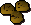

")
Postbag 24
Dear Mr Malignus Mortifer,
I write to you demanding that you apologize and admit the error of your ways. Not too long ago you might remember that I made a simple joke about your costume and you turned me into a toadstool. I was not too happy in my mushroom form and had grown used to being able to speak, move and breathe. Just because you're not too keen on someone's wit, or perhaps are a little self-conscious of your clothing, does not mean that you can turn people into fungi whenever you want. I suggest some anger management classes. If you don't like this idea, however, then maybe you could change gradually. Like start off with ferns, move up to amoebae, then maybe some anteaters and armadillos, then apes and chimps and finally keep them as humans. If you still refuse, then I will be forced to sue you with the finest gnome lawyer there is.
Yours Sincerely
Ms GroovyBoogie
PS Postie, you might want to give him this letter and run. Otherwise you might end up a little more fungal than you are now.
GroovyBoogie,
Anger management? ANGER MANAGEMENT?
1...2...3...
You're right, of course: I shouldn't do that. I actually already go to therapy; my therapist suggested I work my anger out on plants and stuff, but so many adventurers bug me about my superior powers of necromancy - you just unfortunately caught me on a bad day - and...and...it builds up...and I GET MAD...
...4...5...6...
...but if I remember correctly, you were not insulting my outfit, you wanted one like it for yourself. You kept going on and on AND ON about necromancy - you just wouldn't STOP - so, in fact, I stand by my decision to funginate you - some people never know when to SHUT UP ABOUT THE SUBJECT...
...7...8...9...
Sorry, there I go again. Anyway, back to your letter. I'm liking the sound of turning people into amoebae; I'll have to remember that one.
Yours calmly,
Malignius Mortifer
P.S. - Please don't bring in the lawyers, I like my freedom so I can keep testing my powers...but if you try that, Missy, just you know I've got better than your SILLY LITTLE GNOME LAWYER! I've got Caruthers, Landsbottom and Og on my side, and they'll TEAR YOUR ARGUMENT TO SHREDS, MUSHROOM LADY...
P.P.S. - You'd BETTER run, skull-shaped postman, lest I turn you into a...into a...a...
P.P.P.S. - ...10.
Dear Council of RuneScape,
I hope you consider me important enough for writing a letter to you, but I have to express my worries about something:
I am very worried about the environmental condition of Gielinor! Every day, tons of fires are made just for fun. I see people in big cities like Catherby burning long lines of fire non-stop.
Another worry is the high industrial rate of certain cities: there are so many furnaces used for smelting ores into bars, the furnaces are working non-stop every day! Impure iron ore makes the furnaces dirty, so they have to work harder for the same amount of bars.
That is why I, a follower of Guthix (who really created this lovely place), would like you to make an "Environmental Council for Gielinor". They could take measures to make this place better for everybody (maybe some wizards can make a machine for that, but that's quite ironic).
Thanks,
The civilian-made Nature Guild, located in the eternal forest from the fairies
Dear affiliates of the Civilian-made Nature Guild,
Many thanks for writing to the Collected Appreciators of RuneScape's Environment (CARE). Although your letter was addressed elsewhere, Mr. Pete was kind enough to forward it to us.
You are right: the condition of RuneScape is getting worse. This is most clearly seen with the Kharidian desert, which is creeping north at a rate of one metre per year. It may seem inconsequential, but this rate is growing. Imagine RuneScape a thousand years ago – with forests, streams and grassland as far south as the Duel Arena.
The ice sheets of the north, too, are melting at rates that have serious implications to RuneScape. At current rates, we could see large-scale flooding of Lumbridge Swamp, Tutorial Island, Mos Le'Harmless and Catherby.
Although the current trend for Firemaking has had an impact on the levels of pollution, it is the move towards industrialisation that is the worst culprit. Dwarven technology alone produces 65% of emissions, and this will only get worse as they continue to manufacture and process.
The heads of the dwarven states refuse to acknowledge this, of course, as exemplified by Drorkar's popular thesis "1001 Uses for Soot: A Celebration".
While lies like these exist, our ability to educate the world about an overheating RuneScape is diminished.
Yours,
Kaqemeex, Chairman of CARE
Dear penguins,
I was just wondering why are you trying to take over RuneScape? Humans haven't done anything to harm you, and your home up north is quite nice - especially the agility course. Have you ever thought of taking over the south pole, if there is one, or even moving to the ice region of the wildy? The rest of RuneScape is quite warm, so you might not like it, but if ScapeRune is the opposite it must be quite cold there.
Hoping that you won't take over RuneScape,
kona_man1
Dear Kona_man1,
Despite what you may think, my comrades and I relish the hotter climates of your more equatorial regions. The Motherland is a glorious home, but since my comrades and I have stopped enjoying borsch (through a lack of resources, not by choice), our body temperatures have plummeted. Sooner or later, we will be forced to migrate to warmer regions if we are to survive without having to wear those horrible rags and heavy metal things...clothes and armour, right?
So you see, we must inva... move home, to ensure our domina... our survival.
I will not lie...we do not like your species. Humans are tall and funny-looking, although that is not entirely your fault. And I suppose it's not fair to mock those less fortunate than ourselves.
You will benefit greatly from our teachings and wisdom, and we will benefit from taking your land and possessions. We have always been advocates of fair trade.
So, until the day comes when we waddle onto your shores and declare a state of equality, sleep soundly in the knowledge that your fate as future comrades is sealed.
Until then, human.
Dear Death,
I've often wondered what it is that you do during the rest of the year. I mean, you only turn up to claim us for a couple of weeks around Hallowe'en. Do you have any hobbies to occupy your time? Perhaps a society or institute where you discuss your interests with like-minded, erm, entities?
Further, are there any other manifestations of the subconscious where you live? I'd dearly like to meet War, Famine and the Tooth Fairy.
Yours morbidly,
Nielsbohr

Mortal Nielsbohr: the sands of your life have run thin; the years have worn your life to ash...
Oh dear, sorry about that - I do get all caught up in the spirit of things at this time of year, so you'll have to excuse me if I seem mildly distracted.
Anyway, while I'm not in RuneScape calling people to the endless void of death (well, it's not exactly endless on RuneScape, which is why I don't bother doing it all year. It's quite a chore, you know, having to grab the same inept adventurers over and over again. Sometimes I just wish they'd realise that, you know, dragons are a bit much for them. Not to mention giant rats...you wouldn't believe the number of people I have to pick up over and over again when they keep going to Lumbridge Swamp), I rather enjoy crochet and embroidery. They're good for keeping my fingers flexible and agile, which comes in handy as you wouldn't believe the trouble dropping a few hourglasses causes!
I'm terribly sorry to say that I haven't seen the Tooth Fairy for some time, but I do have a regular cribbage partner whose job is to make soggy teabags appear on kitchen benches. Technically, he's the Soggy Teabag On The Bench Gremlin, but he prefers to be called Nigel.
Yours,
Harold Death Esq.
Dear Diango,
I've been wondering all these passing years how you made a deal to get our holiday items back.
Don't get me wrong, it must be cool to get to meet the Easter Bunny, the faires, Shanty Claws, and so on, but this up-coming Hallowe'en, when we get something for that holiday, you're going to have to make a deal with ~Dramatic Pause~ The Grim Reaper ~dun dun dunnnnn~.
Won't you get scared? I mean, what if he tricks you into selling your soul?
Hope I didn't put too much pressure on you,
With great thoughtfulness,
Waluigi60
Dear Waluigi60,
Thank you for your letter, partner. Seems you've misunderstood the situation, though. I'm not the one who makes the deals around this place, humble toymaker that I am. The Easter Bunny, Shanty Claws - heck, even the Grim Reaper himself - have all owed me favours. I know, I know, after all the help I've asked from you in the past it's hard to believe that anyone would owe me, of all people, a favour. I won't go into the details, though. As much as the Grim Reaper owes me a favour, the story about it is no less terrifying than were it the other way round. Well, maybe not, but my sleep is still haunted. I'll be glad when this Hallowe'en is over.
Anyway, after what I've done for these fine folk, it's only a small part of those favours returned by which I can make sure that your helpfulness towards me isn't forgotten. I've got plenty of items stashed away to replace those you might misplace. No worries.
So don't forget to come see me if you lose any of those items of yours,
Diango
Dear Al-Kharid gate guard.
Most people know that they have to pay 5 gp to pass through your gates (unless they have completed Prince Ali Rescue). When I ask you what do you with all that money, you tell me it's going to the Al Kharid or something. I´m sure you have collected lots of money! If it goes to Al Kharid, there should surely be a new shops, or reconstruction or something. So my question is: "What do you do with all that money?".
I'm afraid I didn't manage to get a satisfactory answer to this letter; but I wonder if the guards' reaction will shed any light on the situation for you:
Me: Hello, chaps. I've come to deliver a letter!
Guard 1: 'Ello, little skull, what's that? You've got a letter for us?
Guard 2: I suppose you'd best read it to us, then.
Guard 1: Though, that's not to say we can't read, we don't want to give 'im that impression, Kev.
Guard 2: No, of course not, Steve, but the little fella seems keen. Let's let him read it.
Me: Can I please read my letter now?
Guard 2: Sure thing, buddy.
Me: <reads letter>
Guard 1: Crikey, Kev.
Guard 2: Crikey indeed, Steve. You know what this means, don't you?
Guard 1: Too right. We've been rumbled.
Me: Hang on, let me write that down.
Guard 2: Umm...we're actually afraid of parchment so don't do that. Please.
Guard 1: Yeah, it's true, and writing is err...against our religion. Yeah, that's right.
Guard 2: Ooh, I just spotted something over there, real interesting, like. You should probably check it out.
<I foolishly turned around at this point and heard over my shoulder (or at least where my shoulder would be if I had one)...>
Guard 1: As it happens we've gotta be going now. Shift change and all that. Bye!
When I turned back there were two different (although curiously similar-looking) guards who answered to the names Augusto and Rodriguez, and had apparently relieved Kev and Steve just an instant before. They didn't seem excited by my letter and would only say "Nothing interesting happens" in increasingly menacing tones when I tried to read it to them.
Postie Pete
Spooky Old Snacks
This month, the Wise Old Man has been tinkering in the kitchen and has come up with the perfect snack for Hallowe'en - Pumpkin Crunchies! These crunchies will be great for a ghoulishly good get-together or to terrify those tricky treaters!
 |
Pumpkin Crunchies |
 |
Preparation:
Preheat oven to 175 degrees Celsius (350 degrees Fahrenheit)Ingredients:
2 cups (450g) canned pumpkin1 and 1/4 cups (250g) brown sugar
1 and 1/4 cups (280g) white sugar
4 cups (440g) flour
1 and 1/4 (280g) cups butter
2 teaspoons baking powder
2 teaspoons baking soda
1/2 teaspoon cinnamon
1 teaspoon vanilla
1 teaspoon salt
2 large eggs
Optional Toppings:
1/2 teaspoon ground ginger1/4 teaspoon cloves
1/2 teaspoon more cinnamon
1 generous handful of oatmeal
Nuts and raisins
Directions:
- Combine the flour, baking soda, baking powder, cinnamon, and salt. (If you are using any of the optional toppings, the ginger, cloves, cinnamon and/or oatmeal should be added to this mixture.) Set aside.
- In a large bowl, mix the pumpkin, butter, white sugar, brown sugar, eggs and vanilla until thoroughly mixed and creamy.
- Slowly add the dry ingredients into the pumpkin mixture and stir until everything is thoroughly blended. (If you'd like, you can add a cup of nuts or raisins at this point. Pecans or walnuts work quite well in these crunchies.)
For fun:
Cut crunchy dough in a pumpkin shape and use pecans, raisins, chocolate chips to make jack'o'lantern faces.To bake:
- Spoon crunchy dough onto a lightly greased baking sheet. Make sure you leave space between the crunchies as they spread out when they bake!
- Bake at around 175 degrees Celsius (350 degrees Fahrenheit) for 15-20 minutes, or until crunchies are golden brown. Note: it's a good idea to watch your crunchies carefully when they're baking - ovens differ, so yours might bake more quickly or may need an extra few minutes!
Sorry, these crunchies are delicious! What I meant to say was: That's it from me for now, but I'll see you all again next month, so keep sending me your letters and paintings! Send your letters to  .
.

More articles in
Postbag from the Hedge
|
|